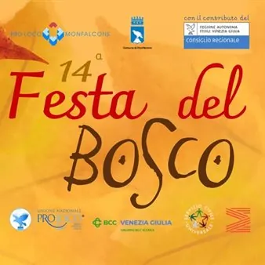

da sab 31 ott a dom 1 nov
14^ Festa del Bosco
A Monfalcone l'autunno entra nel vivo con la "Festa del Bosco" della Pro Loco Monfalcone! La manifestazione, che giunge quest'anno alla 14^ edizione, vi aspetta sabato 31 ottobre e domenica 1° novembre 2026 in Piazza della Repubblica e Piazza Unità d'Italia. Di seguito il…
 Indicazioni
Indicazioni
- Costi e prenotazioni
- Costo non indicato · Prenotazione non indicata
- Programma
- Programma da verificare. Apri la fonte ufficiale per orari e possibili aggiornamenti.
- In caso di maltempo
- Nessuna indicazione specifica pubblicata.
- Note
- Acquisito automaticamente dalla fonte.
L’EVENTO
Descrizione completa
A Monfalcone l'autunno entra nel vivo con la "Festa del Bosco" della Pro Loco Monfalcone!
La manifestazione, che giunge quest'anno alla 14^ edizione, vi aspetta sabato 31 ottobre e domenica 1° novembre 2026 in Piazza della Repubblica e Piazza Unità d'Italia.
Di seguito il programma dettagliato delle due giornate.
Sabato 31 ottobre
Ore 10.00 - Apertura stand enogastronomici e Mercatino del Bosco
In Piazza Unità d’Italia: Castagnata e ribolla con la Pro Loco; Mostra del Fungo e Mostra fotografica autunnale.
Ore 10.00 - Ritrovo allo stand della Pro Loco in Piazza Unità d’Italia
Ore 10.30 - Partenza della passeggiata "Foglie d'autunno sul Carso", con la guida naturalistica e ornitologica Dorian Lorenzutti della Cooperativa Ecothema.
Ore 12.30 - Rientro in festa e ribolla per tutti i partecipanti della camminata, a cura dell’Associazione Ambientalista Eugenio Rosmann di Monfalcone. Per maggiori informazioni: 335 666 0843.
Ore 10.00- Ore 18.00, Piazza della Repubblica - "Falconeria didattica: vieni a scoprire da vicino i rapaci notturni e diurni addestrati", laboratorio di disegno a tema per bambini e ragazzi.
Ore 11.00, Piazza Unità d’Italia - Presentazione del dolce “La Rosa Bisiaca”, a cura dello chef Nevio Lupi: show-cooking e degustazione gratuita fino a esaurimento.
A seguire, inaugurazione ufficiale della Festa del Bosco: saluti delle Autorità e momento musicale con gli zampognari.
Ore 12.00 - Presentazione del progetto “Scoleta de Bisiac”, lezione e giochi con il dialetto bisiaco per bambini, a cura di Chiara Moimas e Lorella Franco. Attività organizzata in collaborazione con l’Associazione Culturale Bisiaca.
Ore 15.00 – Ore 17.00 - Festa di Halloween con Gaia Animazione: sketch, giochi, balli e truccabimbi da brivido!
Ore 17.00 – Ore 20.00 - Aperitivo con accompagnamento musicale di Alessandro Gerolin.
Domenica 1° novembre
Ore 9.45 - Ritrovo allo stand della Pro Loco in Piazza Unità d’Italia
Ore 10.00 Partenza della camminata "Sui sentieri del Carso monfalconese fino alla Rocca e al Centro Visite Pietrarossa" fino al colle della Rocca e al Centro Visite Lago di Pietrarossa; sosta con visita al Museo Multimediale del Carso e arrivo alle Risorgive del Timavo; risalita alla Rocca e rientro in festa. Ad accompagnare i partecipanti, alcuni membri della Sezione CAI di Monfalcone, che faranno loro conoscere piante erbacee, arbusti e alberi presenti lungo il percorso. Per la camminata si raccomandano abbigliamento e scarpe adatte ai sentieri del Carso. In caso di maltempo la camminata sarà annullata. Per informazioni e prenotazioni chiamare il CAI al numero 0481 480292 (martedì 17.30-19.30 e giovedì 20.30-22.30) o scrivere una mail a: segreteria@caimonfalcone.org
Ore 12.30 - Rientro in Festa e ribolla per tutti i partecipanti offerta dalla Pro Loco.
Ore 10.00 - Ore 18.00, Piazza della Repubblica - "Villaggio di giochi in legno di una volta", con i bambini che potranno cimentarsi con 35 giochi in legno d’ingegno e abilità.
Ore 12.00, Piazza Unità d’Italia - Show-cooking a cura di Daniele Cechet, chef del Saint Mark's di Monfalcone, dal titolo "Ottobre nel piatto", gnocchi di ricotta e farina di castagne con vellutata di zucca e porcini saltati e dimostrazione di cocktail a cura di Mauro Casagrande, barman del Saint Mark's di Monfalcone, dal titolo "Equinozio d'autunno": per entrambi degustazione gratuita fino a esaurimento.
Ore 14.00 – Ore 16.30 Piazza Unità d’Italia - 10^ "Gara di Dolci" della Festa del Bosco, con consegna dei dolci in gara, assaggio e valutazione della Giuria. Dopo l’assaggio, degustazione dei dolci in concorso aperta a tutti.
Ore 15.00 – Ore 17.00 - Animazione e giochi a tema per bambini con Ernesto Animazione.
Ore 16.30 - Premiazioni concorso fotografico autunnale e Premiazioni Gara di dolci.
Ore 17.00 - Ore 19.00 - Musica e cabaret con i CRAMPI ELISI (Maxino, Flavio Furian, Elisa Bombacigno).
IL PROGRAMMA
Programma e orari
Appuntamenti raccolti dalle fonti elencate. Dove manca un orario, non è ancora disponibile in questa scheda.
Programma pubblicato
- Ore 10.00 - Apertura stand enogastronomici e Mercatino del Bosco
- Ore 10.00 - Ritrovo allo stand della Pro Loco in Piazza Unità d’Italia
- Ore 10.30 - Partenza della passeggiata "Foglie d'autunno sul Carso", con la guida naturalistica e ornitologica Dorian Lorenzutti della Cooperativa Ecothema.
- Ore 12.30 - Rientro in festa e ribolla per tutti i partecipanti della camminata, a cura dell’Associazione Ambientalista Eugenio Rosmann di Monfalcone. Per maggiori informazioni: 335 666 0843.
- Ore 10.00- Ore 18.00, Piazza della Repubblica - "Falconeria didattica: vieni a scoprire da vicino i rapaci notturni e diurni addestrati", laboratorio di disegno a tema per bambini e ragazzi.
- Ore 11.00, Piazza Unità d’Italia - Presentazione del dolce “La Rosa Bisiaca”, a cura dello chef Nevio Lupi: show-cooking e degustazione gratuita fino a esaurimento.
- Ore 15.00 – Ore 17.00 - Festa di Halloween con Gaia Animazione: sketch, giochi, balli e truccabimbi da brivido!
- Ore 17.00 – Ore 20.00 - Aperitivo con accompagnamento musicale di Alessandro Gerolin.
- Ore 9.45 - Ritrovo allo stand della Pro Loco in Piazza Unità d’Italia
- Ore 12.30 - Rientro in Festa e ribolla per tutti i partecipanti offerta dalla Pro Loco.
- Ore 10.00 - Ore 18.00, Piazza della Repubblica - "Villaggio di giochi in legno di una volta", con i bambini che potranno cimentarsi con 35 giochi in legno d’ingegno e abilità.
- Ore 15.00 – Ore 17.00 - Animazione e giochi a tema per bambini con Ernesto Animazione.
- Ore 16.30 - Premiazioni concorso fotografico autunnale e Premiazioni Gara di dolci.
- Ore 17.00 - Ore 19.00 - Musica e cabaret con i CRAMPI ELISI (Maxino, Flavio Furian, Elisa Bombacigno).
INFORMAZIONI UTILI
Prima di partire
- Controllare la fonte prima di partire.
ORGANIZZAZIONE